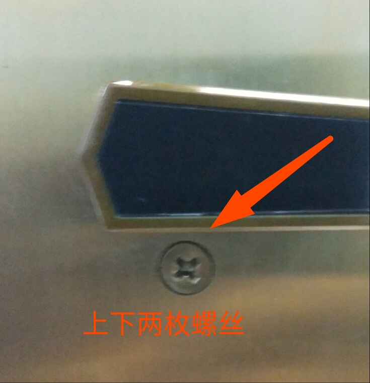
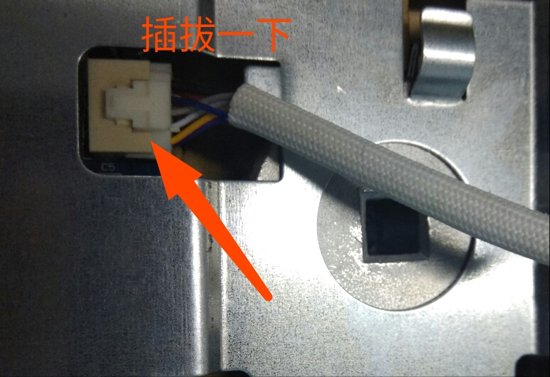

智能锁配置相关问题
1.reset键在什么位置
2.按了reset键之后，没有REDPINE-XXX热点
3.Android 链接REDPINE-XXX热点，出现没有开启定位权限对话框
4.为什么手机无法配置成功？
1.reset键在什么位置？

2.按了reset键之后，没有REDPINE-XXX热点
- 首先确认步骤是否正确。按门铃键，然后按reset键2秒，听见智能锁提示“开始配置网络”，4到5秒后，Android手机自动连接，或者后台WiFi列表出现“REDPINE-XXXX”热点，表示操作正确。如果在wifi列表长时间无法找到热点，那么可能连接线出现问题。应该打开后面板，将连接线重新插拔一次。


- reset键是凹在内部的小按钮，点击的时候是有回馈的。如果用细小的针类是不容易按到的，所以换粗点物品确定按到了reset键。
3.Android 链接REDPINE-XXX热点，出现没有开启定位权限对话框
- 表示没有开启定位权限，定位权限在手机自身 “安全中心”或者 “手机管家” “设置”APP里面，然后找到九万里智能锁APP，打开定位权限。最后重新配置一次。
4.为什么手机无法配置成功？
- 不支持是5G路由器
- 输入wifi账号带有中文名称
- 家中的路由器距离锁太远